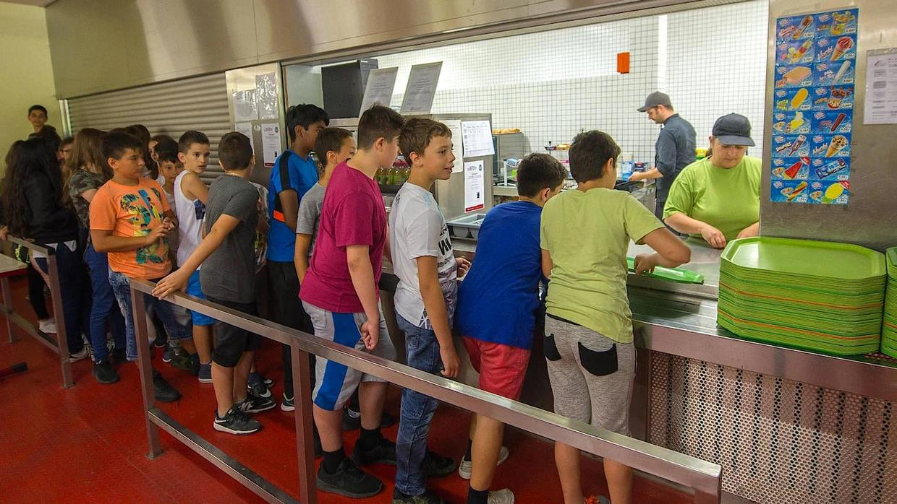
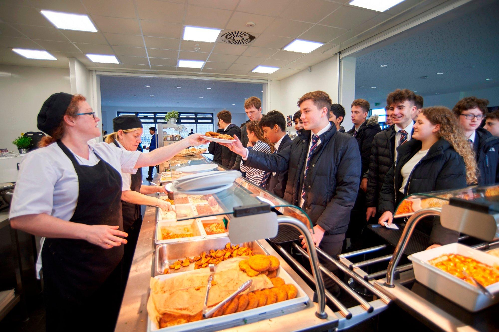
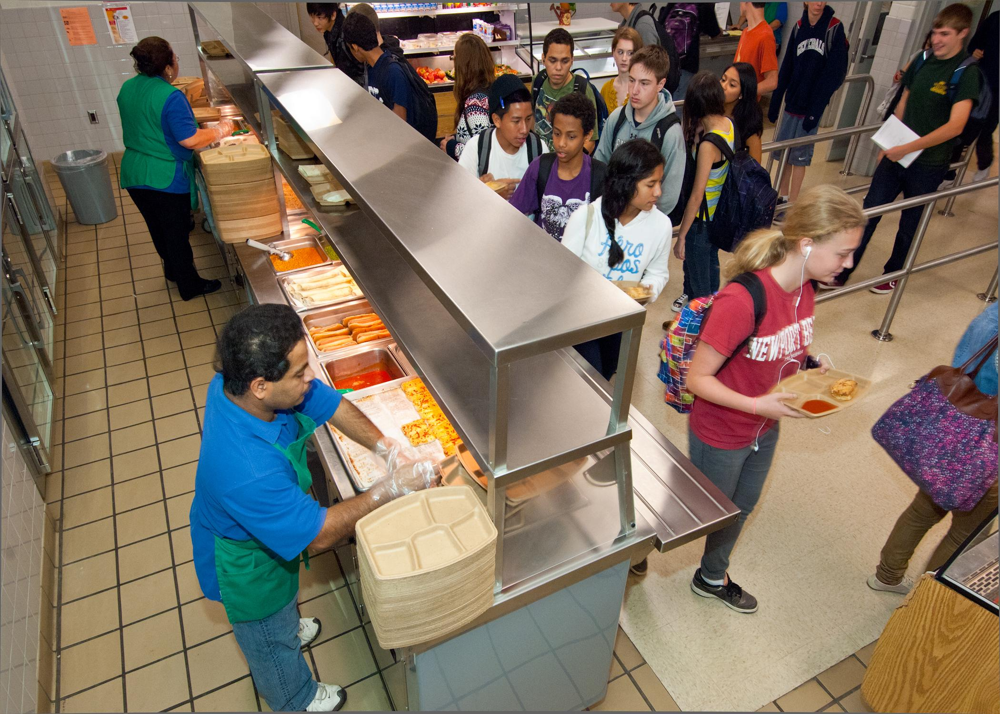

Respeto
Esperar nuestro turno y reconocer los derechos de los demás.
Respetar los turnos en los chalets del INFRAMEN demuestra educación, solidaridad y respeto por los demás.
Asume el compromiso
La convivencia mejora cuando cada estudiante pone de su parte.
Esperar nuestro turno y reconocer los derechos de los demás.
Comprender que todos necesitamos tiempo para comprar.
Evitar empujones, discusiones y acciones que desorganicen la fila.

Durante el recreo, muchos estudiantes se acercan a los chalets al mismo tiempo. Cuando no se respetan los turnos, pueden producirse desorden, discusiones y dificultades para que todos compren.
Formar una fila y respetar el orden ayuda a que la atención sea más organizada y la convivencia sea mejor.

Varias personas intentando pasar al mismo tiempo dificultan la atención.
La falta de organización puede hacer más lenta la compra de alimentos.
Los empujones y las discusiones afectan el ambiente escolar.
Respetar el turno de los demás también es una forma de demostrar educación.
El cambio empieza con nuestras acciones.
Construyamos un ambiente más ordenado durante el recreo.
Todos merecemos la misma oportunidad.
Una fila organizada facilita la atención.
Piensa también en el tiempo de los demás.
Colócate al final de la fila y espera tu turno.
Mantén una distancia adecuada y cuida a quienes te rodean.
Respeta a quienes llevan más tiempo esperando.
Invita a tus compañeros a mantener el orden con respeto.
Contribuye a que los recreos sean más ordenados y agradables para todos.
Estudiantes comprometidos: 0